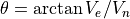
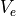
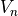
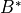

WsfSpaceMover¶
- WsfSpaceMover inherits WsfMover
Input types: WSF_SPACE_MOVER, WSF_NORAD_SPACE_MOVER
Location Methods¶
- WsfGeoPoint LocationAtTime(double aSimTime)¶
Return the location of the platform for the given simulation time, represented as a WsfGeoPoint.
Note
The given time can be any time in the future or past. This method returns the location the platform will be or has been, assuming it does not maneuver.
- Vec3 LocationECI_AtTime(double aSimTime)¶
Return the location of the platform in the ECI frame for the given simulation time, represented as a Vec3.
Note
The given time can be any time in the future or past. This method returns the location the platform will be or has been, assuming it does not maneuver.
- Vec3 VelocityECI_AtTime(double aSimTime)¶
Return the velocity of the platform in the ECI frame for the given simulation time, represented as a Vec3.
Note
The given time can be any time in the future or past. This method returns the velocity the platform will have or had, assuming it does not maneuver.
Orbit Methods¶
- void SetInitialOrbitalState(OrbitalState aOrbitalState)¶
Set the initial orbital state of the space mover using a OrbitalState object. This function will only have an effect for platforms that have not already been initialized.
- bool SetOrbit(double aLatitude, double aLongitude, double aAltitude, double aHeading)¶
Initialize the orbit based on information contained in a waypoint. Latitude and longitude values should be in standard decimal degrees, altitude in meters, and heading in degrees. If this method is called after the parent platform is initialized, the mover will be reinitialized at the current simulation time.
Note
This method is somewhat limiting in that the orbit will always be circular. If one has general coordinates or orbital elements, use another form of this method
- void SetOrbit(Vec3 aLocationECI, Vec3 aVelocityECI)¶
Initialize the orbit based on a predetermined location and velocity in ECI coordinates. If this method is called after the parent platform is initialized, the mover will be reinitialized at the current simulation time.
- void SetOrbit(Vec3 aLocationECI, Vec3 aVelocityECI, Calendar aCalendar)¶
Initialize the orbit based on a predetermined location and velocity in ECI coordinates with the given calendar as the initial epoch. If this method is called after the parent platform is initialized, the mover will be reinitialized at the current simulation time.
Orbital Element Methods¶
- double ArgumentOfPeriapsis()¶
Return the argument of periapsis of platform’s orbit in degrees.
- double Eccentricity()¶
Return the eccentricity of the platform’s orbit.
Note
The eccentricity is equal to zero for a circular orbit and approaches 1 for a nearly parabolic orbit.
- double Inclination()¶
Return the inclination of platform’s orbit in degrees.
- double MeanAnomaly()¶
Return the mean anomaly of the platform’s orbit at the current time.
- double MeanMotion()¶
Return the mean motion of the platform’s orbit in degrees per second.
- double RAAN()¶
Return the right ascension of the ascending node of a platform’s orbit in degrees.
- double RevolutionsPerDay()¶
Return the number of revolutions per day of the platform’s orbit.
- double SemiMajorAxis()¶
Return the semi-major axis of the platform’s orbit in meters.
- double PeriapsisRadius()¶
- double Periapsis()¶
Return the periapsis radius of the platform’s orbit in meters.
Note
The Periapsis method is deprecated and will be removed in a future release. PeriapsisRadius is preferred.
- double PeriapsisAltitude()¶
Return the periapsis altitude of the platform’s orbit in meters. This altitude is referenced to the mean radius of the central_body
- double ApoapsisRadius()¶
- double Apoapsis()¶
Return the apoapsis radius of the platform’s orbit in meters.
Note
The Apoapsis method is deprecated and will be removed in a future release. ApoapsisRadius is preferred.
- double ApoapsisAltitude()¶
Return the apoapsis altitude of the platform’s orbit in meters. This altitude is referenced to the mean radius of the central_body.
- double TrueAnomaly()¶
Return the true anomaly of the platform’s orbit at the current time.
- string Descriptor()¶
Return the descriptor (tag) for the space vehicle. If a TLE is being used, the descriptor is line 0; otherwise, it is provided in the descriptor input.
- string Designator()¶
Return the designator for the space vehicle. If a TLE is being used, the designator is the TLE satellite international designator; otherwise, it is either provided in the designator input, or assigned a default value of “00001A”.
Initial Orbital Elements Methods¶
This set of methods provides access to the initial orbital elements used to define the platform.
- double InitialArgumentOfPeriapsis()¶
Return the argument of periapsis in degrees of the initial orbital elements.
- double InitialEccentricity()¶
Return the eccentricity of the initial orbital elements.
- double InitialInclination()¶
Return the inclination in degrees of the initial orbital elements.
- double InitialMeanAnomaly()¶
Return the mean anomaly in degrees of the initial orbital elements.
- double InitialMeanMotion()¶
Return the mean motion in degrees per second of the initial orbital elements.
- double InitialRAAN()¶
Return the RAAN in degrees of the initial orbital elements.
- double InitialSemiMajorAxis()¶
Return the semi-major axis in meters of the initial orbital elements.
- double InitialTrueAnomaly()¶
Return the true anomaly in degrees of the initial orbital elements.
- WsfGeoPoint InitialPositionLLA()¶
Return the initial LLA position.
- double InitialHeading()¶
Return the initial heading in degrees, computed from the initial velocity of the satellite:

where:
 is the “East” component of the satellite’s initial NED velocity vector
 is the “North” component of the satellite’s initial NED velocity vector
TLE Methods¶
- string TwoLineElement()¶
Return current orbital elements in a two-line element format. If the satellite was originally specified as a two-line element, all non-orbital element fields (launch designator, etc.) will be copied.
- bool SetTwoLineElement(string aTwoLineElement)¶
Set the two-line element in the mover. The satellite with then be initialized with the data contained in the TLE.
- string InitialTwoLineElement()¶
Return the initial orbital elements rendered as a TLE. If the initial orbital elements are unable to be converted to a TLE, this method will return an empty string.
- int SatelliteNumber()¶
Return the satellite number of the TLE associated with this mover. If the orbital elements for this space mover are not derived from a TLE, then this method will return -1.
- string Classification()¶
Return the classification of the TLE associated with this mover. If the orbital elements for this space mover are not derived from a TLE, then this method will return an empty string.
- double BallisticCoefficient()¶
Return the ballistic coefficient of the TLE associated with this mover. This is also known as the first derivative of the mean motion. If the orbital elements for this space mover are not derived from a TLE, then this method will return 0.
- double BStar()¶
Return the  drag term of the TLE associated with this mover. If the orbital elements for this space mover are not derived from a TLE, then this method will return 0.
Convenience Methods¶
- double OrbitalPeriod()¶
Return the period of the platform’s orbit in seconds.
- string OrbitalRegime()¶
Return the orbital regime of the platform’s orbit. Possible return values include:
‘LEO’ when the apoapsis altitude is less than 2000 km;
‘MEO’ when the apoapsis altitude is less than 35686 km and the periapsis altitude is greater than 2000 km;
‘GEO’ when the altitude is within 100 km of 35786 km at all points along the orbit, the eccentricity of the orbit is less than 0.001, and the inclination is less than 90 degrees;
‘HEO’ when the eccentricity is greater than 0.4;
an empty string when the orbit does not fall into one of the other regimes.
- double RevolutionNumber(double aTime)¶
- double RevolutionNumber(Calendar aTime)¶
Return the number of revolutions that the platform has traversed since the given time.
Note
This uses the current orbital elements to calculate the number of revolutions, so this method will not give accurate results if the platform has maneuvered between the given time and now.
- Vec3 RIC(WsfPlatform aPlatform)¶
- Vec3 RIC(WsfTrack aTrack)¶
Return radial, in-track, and cross-track distances between the mover and the platform or track at the current time.
- Vec3 RIC_AtTime(double aTime, WsfPlatform aPlatform)¶
- Vec3 RIC_AtTime(double aTime, WsfTrack aTrack)¶
Return radial, in-track, and cross-track distances between the mover and the platform or track at the specified time.
Note
The platform version of RIC_AtTime is only valid for platforms with no mover or a WSF_SPACE_MOVER, WSF_AIR_MOVER, WSF_GROUND_MOVER or WSF_SURFACE_MOVER.
Orientation Methods¶
- bool SetOrientation(WsfSpaceOrientation aOrientationType)¶
Change the platform’s orientation to one of the supported orientation types. If the orientation cannot be set (for example, specifying WsfSpaceOrientation.ENTITY_WITH_NADIR_CONSTRAINT with an invalid platform argument, false is returned).
- void SetOrientation(WsfGeoPoint aPoint)¶
Change the platform’s orientation to point at the specified WsfGeoPoint. The platform’s z axis will point at the geopoint, while the x axis will be constrained to the plane defined by the geopoint and the nadir.
- void SetOrientation(Quaternion aOrientation)¶
Change the platform’s orientation using a quaternion instead of Euler angles. The quaternion must represent the desired ECI to ECS coordinate transformation.
- void SetOrientation(double aYaw, double aPitch, double aRoll, Vec3 aX_AxisOrientationECI, Vec3 aZ_AxisConstraintECI)¶
Align the PCS direction specified by the provided Euler angles (aYaw and aPitch) with the given ECI orientation vector (aX_AxisOrientation). Constrain the PCS z axis to be in the plane of the orientation vector and the given ECI constraint vector (aZ_AxisConstraintECI).
- void SetOrientation(WsfArticulatedPart aPart, Vec3 aX_AxisOrientationECI, Vec3 aZ_AxisConstraintECI)¶
Align the PCS direction specified by the provided WsfArticulatedPart with the given ECI orientation vector (aX_AxisOrientation). Constrain the PCS z axis to be in the plane of the orientation vector and the given ECI constraint vector (aZ_AxisConstraintECI).
Deprecated Orientation Methods¶
- bool SetOrientation(string aOrientationType)¶
Change the platform’s orientation to one of the supported orientation types:
nadir_with_eci_velocity_constraint
solar_with_nadir_constraint
nadir_with_solar_constraint
nadir_with_ecef_velocity_constraint
eci_velocity_with_nadir_constraint
eci_velocity_with_solar_constraint
none
Note
If one of these is not specified, the method will return false.
Mission Sequence Methods¶
- double AvailableDeltaV()¶
Get the available delta-V remaining in m/s.
Note
This value will only have significance if a maneuvering model is defined and if the underlying orbital propagator type supports maneuvering; otherwise a very large value (DBL_MAX) is returned.
- bool CancelMissionSequence()¶
Cancel a mission sequence that is currently executing. The currently scheduled orbital event will cease execution; a ORBITAL_MANEUVER_CANCELED observer callback will be triggered, and any subsequent events in the mission sequence will not be executed.
- bool ExecuteEvent(WsfOrbitalEvent aEvent)¶
Execute the supplied orbital event. Returns true if the event is verified as a valid (i.e., a compatible WsfOrbitalEventCondition is provided, and any other checks also pass); otherwise false.
- bool ExecuteManeuver(WsfOrbitalManeuver aManeuver)¶
Execute the supplied maneuver. Returns true if the maneuver is verified as a valid (i.e., a compatible WsfOrbitalEventCondition is provided, and any other checks also pass); otherwise false.
Note
The WsfSpaceMover.ExecuteEvent method may also be used to Execute an orbital maneuver.
- bool ExecuteMissionSequence(WsfOrbitalMissionSequence aMissionSequence)¶
Execute the supplied mission sequence. Returns true if the mission sequence is verified as valid (i.e., compatible WsfOrbitalEventConditions are provided for each event, and any other checks also pass for all events in the sequence), otherwise false.
Note
Calling any of WsfSpaceMover.ExecuteMissionSequence, WsfSpaceMover.ExecuteEvent, and WsfSpaceMover.ExecuteManeuver also have the effect of calling WsfSpaceMover.CancelMissionSequence, as the new mission sequence replaces the old one.
- double GetTimeToConstraint(WsfOrbitalEventCondition aCondition)¶
Return the time in seconds that would elapse until the given condition is met by this mover. This will return a negative value if there is no solution for that constraint or if the mover does not have support for the given condition type.
Note
This method will not give accurate results for the WsfOrbitalEventCondition.AT_NORTHERN_INTERSECTION and WsfOrbitalEventCondition.AT_SOUTHERN_INTERSECTION.
Orbit Computation Methods¶
- Array<double> ComputeRendezvous(WsfTrack aTrack, double aMaxTime, double aMaxDeltaV, bool aMinimizeDeltaV)¶
- Array<double> ComputeRendezvous(WsfTargetPoint aTargetPoint, double aMaxTime, double aMaxDeltaV, bool aMinimizeDeltaV)¶
Compute a rendezvous maneuver without actually performing the maneuver. The target of the rendezvous is specified by either a WsfTrack or a WsfTargetPoint.
These versions of the method optimize the rendezvous using the given constraints and optimization selection. The maximum allowable time to complete the rendezvous, and the maximum allowable change in velocity must be provided. This method supports two optimization options: a rendezvous that uses the minimum change in velocity given the maximum allowable time to completion, or a rendezvous that takes the least time given the maximum allowable change in velocity. The final argument to this routine should be true to minimize the change in velocity, or false to minimize the time.
In addition to the supplied time and velocity change constraints, this method will only find solutions that have transfer orbits that do not intersect the Earth, and that are non-hyperbolic. If a valid solution is found, the computed rendezvous maneuver duration and the computed change in velocity will be returned as the first and second entries of an Array<double>. In the case that no rendezvous is possible satisfying the constraints, an empty array is returned.
- Array<double> ComputeRendezvous(WsfTargetPoint aTargetPoint, double aMaxTime, double aMaxDeltaV, WsfOrbitalOptimizationCost aCost)¶
Compute a rendezvous maneuver without actually performing the maneuver. The target of the rendezvous is specified by a WsfTargetPoint.
This version of the method optimizes the rendezvous by minimizing the provided cost, aCost. The maximum allowable time to complete the rendezvous, and the maximum allowable change in velocity must be provided.
In addition to the supplied time and velocity change constraints, this method will only find solutions that have transfer orbits that do not intersect the Earth, and that are non-hyperbolic. If a valid solution is found, the computed rendezvous maneuver duration and the computed change in velocity will be returned as the first and second entries of an Array<double>. In the case that no rendezvous is possible satisfying the constraints, an empty array is returned.
- Array<double> ComputeRendezvous(WsfTrack aTrack, double aTransferTime)¶
- Array<double> ComputeRendezvous(WsfTargetPoint aTargetPoint, double aTransferTime)¶
Compute a rendezvous maneuver without actually performing the maneuver. The target of the rendezvous is specified by either a WsfTrack or a WsfTargetPoint.
These versions of the method calculate the rendezvous with the given fixed transfer time. No optimization is performed, nor any delta-V limit imposed.
This method will only find solutions that have transfer orbits that do not intersect the Earth, and that are hyperbolic only if the mover allows for hyperbolic propagation. If a valid solution is found, the computed rendezvous maneuver duration and the computed change in velocity will be returned as the first and second entries of an Array<double>. In the case that no rendezvous is possible satisfying the constraints, an empty array is returned.
- Array<double> ComputeIntercept(WsfTrack aTrack, double aMaxTime, double aMaxDeltaV, bool aMinimizeDeltaV)¶
- Array<double> ComputeIntercept(WsfTargetPoint aTargetPoint, double aMaxTime, double aMaxDeltaV, bool aMinimizeDeltaV)¶
Compute an intercept maneuver without actually performing the maneuver. The target of the intercept is specified by either a WsfTrack or a WsfTargetPoint.
These versions of the method optimize the intercept using the given constraints and optimization selection. The maximum allowable time to complete the intercept, and the maximum allowable change in velocity must be provided. This method supports two optimization options: an intercept that uses the minimum change in velocity given the maximum allowable time to completion, or an intercept that takes the least time given the maximum allowable change in velocity. The final argument to this routine should be true to minimize the change in velocity, or false to minimize the time.
In addition to the supplied time and velocity constraints, this method will only find solutions that have transfer orbits that do not intersect the Earth, and that are non-hyperbolic. If a valid solution is found, the computed intercept maneuver duration and the computed change in velocity will be returned as the first and second entries of an Array<double>. In the case that no intercept is possible satisfying the constraints, an empty array is returned.
- Array<double> ComputeIntercept(WsfTargetPoint aTargetPoint, double aMaxTime, double aMaxDeltaV, WsfOrbitalOptimizationCost aCost)¶
Compute an intercept maneuver without actually performing the maneuver. The target of the intercept is specified by a WsfTargetPoint.
This version of the method optimizes the intercept by minimizing the provided cost, aCost. The maximum allowable time to complete the intercept, and the maximum allowable change in velocity must be provided.
In addition to the supplied time and velocity constraints, this method will only find solutions that have transfer orbits that do not intersect the Earth, and that are non-hyperbolic. If a valid solution is found, the computed intercept maneuver duration and the computed change in velocity will be returned as the first and second entries of an Array<double>. In the case that no intercept is possible satisfying the constraints, an empty array is returned.
- Array<double> ComputeIntercept(WsfTrack aTrack, double aTransferTime)¶
- Array<double> ComputeIntercept(WsfTargetPoint aTargetPoint, double aTransferTime)¶
Compute an intercept maneuver without actually performing the maneuver. The target of the intercept is specified by either a WsfTrack or a WsfTargetPoint.
These versions of the method calculate the intercept with the given fixed transfer time. No optimization is performed, nor any delta-V limit imposed.
This method will only find solutions that have transfer orbits that do not intersect the Earth, and that are hyperbolic only if the mover allows for hyperbolic propagation. If a valid solution is found, the computed intercept maneuver duration and the computed change in velocity will be returned as the first and second entries of an Array<double>. In the case that no intercept is possible satisfying the constraints, an empty array is returned.
Eclipse Methods¶
- Array<double> EclipseAnomalies()¶
Return the approximate true anomalies for the satellite’s eclipse entry and exit. If the satellite is in eclipse during its current orbit, the true anomaly of entry will be returned in the first element of the array, and the true anomaly of exit will be in the second element. If there is no eclipse, the returned array will be empty.
- Array<double> EclipseTimes()¶
Return the approximate simulation times for the satellite’s eclipse entry and exit. If the satellite is in eclipse during its current orbit, the time of entry will be returned in the first element of the array, and the time of exit will be in the second element. If there is no eclipse, the returned array will be empty.
- int EclipsedState()¶
Return whether the satellite is currently eclipsed. The possible return values are the following:
0 (not eclipsed)
1 (in penumbral eclipse)
2 (in full umbral eclipse)
Geometry Methods¶
- double LookAngleTo(WsfTrack aTrack)¶
- double LookAngleTo(WsfPlatform aPlatform)¶
- double LookAngleTo(double aLatitude, double aLongitude, double aAltitude)¶
- double LookAngleTo(WsfGeoPoint aPoint)¶
Return the angle in degrees from the space mover’s nadir direction to the given target location. If the target is specified as a track, and if that track does not have a valid position, this method will return -360.0.
- double IncidenceAngle(WsfTrack aTrack)¶
- double IncidenceAngle(WsfPlatform aPlatform)¶
- double IncidenceAngle(double aLatitude, double aLongitude, double aAltitude)¶
- double IncidenceAngle(WsfGeoPoint aPoint)¶
Return the angle in degrees between the target location’s vertical direction and the direction from the target location to this space mover. If the target is specified as a track, and if that track does not have a valid position, this method will return -360.0.
- double TargetElevationAngle(WsfTrack aTrack)¶
- double TargetElevationAngle(WsfPlatform aPlatform)¶
- double TargetElevationAngle(double aLatitude, double aLongitude, double aAltitude)¶
- double TargetElevationAngle(WsfGeoPoint aPoint)¶
Return the angle in degrees between the target location’s horizontal direction and the direction from the target location to this space mover. If the target is specified as a track, and if that track does not have a valid position, this method will return -360.0.
- double SquintAngleTo(WsfTrack aTrack)¶
- double SquintAngleTo(WsfPlatform aPlatform)¶
- double SquintAngleTo(double aLatitude, double aLongitude, double aAltitude)¶
- double SquintAngleTo(WsfGeoPoint aPoint)¶
Return the angle in degrees between the WCS velocity of this space mover projected into the local horizontal plane, and the WCS displacement from this space mover to the given target projected into the local horizontal plane. If the target is specified as a track, and if that track does not have a valid position, this method will return -360.0.
- double DistanceToHorizon()¶
Return the distance in meters from the space mover to the horizon of the space mover’s central body. If the mover is inside the mean radius of the central body, this method will return -1.0.
- double LookAngleToHorizon()¶
Return the angle in degrees from the nadir direction to the horizon of the space mover’s central body. If the mover is inside the mean radius of the central body, this method will instead return -360.0.
Deprecated Methods¶
- Array<double> ComputeRendezvous(WsfTrackId aTrackId, double aMaxTime, double aMaxDeltaV, bool aMinimizeDeltaV)¶
Compute a rendezvous maneuver without actually performing the maneuver.
These versions of the method optimize the rendezvous using the given constraints and optimization selection. The maximum allowable time to complete the rendezvous, and the maximum allowable change in velocity must be provided. This method supports two optimization options: a rendezvous that uses the minimum change in velocity given the maximum allowable time to completion, or a rendezvous that takes the least time given the maximum allowable change in velocity. The final argument to this routine should be true to minimize the change in velocity, or false to minimize the time.
In addition to the supplied time and velocity change constraints (if applicable), this method will only find solutions that have transfer orbits that do not intersect the Earth, and that are hyperbolic only if the mover allows for hyperbolic propagation. If a valid solution is found, the computed rendezvous maneuver duration and the computed change in velocity will be returned as the first and second entries of an Array<double>. In the case that no rendezvous is possible satisfying the constraints, an empty array is returned.
Deprecated since version 2.9: This will be removed in a future release.
- Array<double> ComputeIntercept(WsfTrackId aTrackId, double aMaxTime, double aMaxDeltaV, bool aMinimizeDeltaV)¶
Compute an intercept maneuver without actually performing the maneuver.
These versions of the method optimize the intercept using the given constraints and optimization selection. The maximum allowable time to complete the intercept, and the maximum allowable change in velocity must be provided. This method supports two optimization options: an intercept that uses the minimum change in velocity given the maximum allowable time to completion, or an intercept that takes the least time given the maximum allowable change in velocity. The final argument to this routine should be true to minimize the change in velocity, or false to minimize the time.
In addition to the supplied time and velocity constraints (if applicable), this method will only find solutions that have transfer orbits that do not intersect the Earth, and that are hyperbolic only if the mover allows for hyperbolic propagation. If a valid solution is found, the computed intercept maneuver duration and the computed change in velocity will be returned as the first and second entries of an Array<double>. In the case that no intercept is possible satisfying the constraints, an empty array is returned.
Deprecated since version 2.9: This will be removed in a future release.